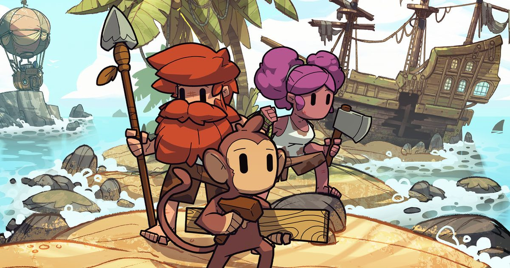

2026-09-16 · 单机深读
9 月 15 日，Jagex 把这款在 Steam 抢先体验里卖出过百万份的生存建造 RPG 推到了 1.0。但它真正值得聊的，不是"又一款毕业了"，而是 Jagex 怎么把一句刺耳的骂名——"Valheim 戴了派对帽"——一点点做成了有自己姓名的游戏。

RuneScape 这个名字，老玩家脑子里蹦出来的画面是点柳树、跑 wilderness、求陌生人帮你修盔甲。二十五年来它一直是个浏览器 MMO，从没真正登陆过主机。9/15 这天，Dragonwilds 1.0 同时上了 PC（Steam / Epic / Jagex Launcher）、PS5、Xbox Series 和——注意——Switch 2，还是首日同步。
更关键的信号在订阅层：Xbox Game Pass 与 PlayStation Plus（Extra / Premium）都是首日免费入库。换句话说，如果你已经付着这两个订阅里的任意一个，这游戏在你的主机上现在就是"零成本试玩"。对一款卖了一百万份、又刚从 EA 毕业的游戏来说，这步棋不是清库存，是 Jagex 第一次认真把触角伸进主机客厅。我们上一篇写 Valheim 1.0（9/9）时还在说"生存建造红海里还值不值得入"，没想到才过一周，红海里另一个主角就补完了自己的结局。
抢先体验阶段的 Dragonwilds 被喷得最多的一句是"内容太薄"——只有几个区域、一只龙王。1.0 直接把这块补上了：
① Scorned Wilderness，第一个 raid。 它不是开新大地图，而是把一串断裂的浮空岛串成通往终局的路，终点是五头龙后 Kuldra the God Eater。整个游戏从 EA 起就在讲的"龙醒了、你得上"的叙事，到 1.0 才算真正收口——之前你打死的是将军 Velgar，现在才轮到真正的龙后。Jagex 自己也说这是"Kuldra's Saga 的结尾"，等于把之前所有铺垫一次性兑现。
② 战斗 overhauled。 新增独立的 Special Attack 资源条；成功招架后能触发镜头辅助的 Visceral Attack（处决演出）；Wand 作为更快、更灵活的施法武器进局。这三点加在一起，是冲着"战斗太糙"的批评去的——EA 时期只有三种计划战斗风格里的一种能玩，现在至少把"打"这件事做得像样了。
③ 真正的跨平台。 PC 与全主机 crossplay、专用服务器、Switch 2 还带 Game Chat。18 个月的 EA 把地图扩了三倍、加了三个带区域 Boss 的新区——一个 EA 游戏不该有的进取心。
而它最被低估的底层，还是那套"Survival Through Sorcery"：召唤幽灵斧瞬间放倒一片树、闪现脱险、手指一弹炸开矿脉、甚至从湖里卷出一条鱼 tornado。把经典 RuneScape 的 1–99 练级 grind，套上一层魔法动作皮。这是它和所有同类最本质的分家点。
说出来有点好笑：Jagex 自己的高级社区经理 Jake Blunt 都公开承认，内部最怕的就是这游戏被说成"Valheim with party hats（戴了派对帽的 Valheim）"。这个 fear 是真实的，因为相似度摆在那——建房子要结构力学、打怪掉材料、推 Boss 推进度、1–4 人小队 co-op，连"砍树建基地打龙后"的主线都和 Valheim 的"刷 biome Boss"同构。
但拆开看，差距是具体的：
魔法 vs 工具。 Valheim 是你真拿斧头一下下砍，Dragonwilds 是念咒秒一片林。前者是"地面的、辛苦的"，后者是"爽快的、偷懒的"。一个更拟真，一个更二次元式地不讲道理。
练级驱动 vs 装备驱动。 Valheim 靠凑出更好的装备变强；Dragonwilds 靠把 Woodcutting / Mining / Smithing 从 1 练到 99 变强。RuneScape 老玩家看到"练级"两个字会本能上头，新人则无所谓——这也是它受众分化的根源。
漂亮但更脚本化，且更不惩罚。 媒体共识是：它比 Valheim 好看、剧情更强、对新手更友好；但 Valheim 的建造系统依然更深，生存压迫感也更强。Gfinity 给的 7/10 一句话点破："这游戏不是为独狼做的。"单人玩，敌人 aggro 凶、体力条抠门、武器耐久烦人，会让你怀疑人生；四人开黑，念咒+建基地+遛龙后才显出魔力。
我们的评分：8.1 / 10。 扣分给单人平衡与"换皮"既视感残留，加分给魔法系统独创性、1.0 兑现结局的诚意、以及"订阅即玩"的低门槛。它不一定是今年最好的生存游戏，但很大概率是最适合"拉三个朋友周末开黑"的那一个。
我们的观察： Jagex 在 EA 里选择"扩团队而不是套现"，季度更新承诺到 2027——这在"EA 毕业即摆烂"的生存品类里反而是稀有物种。玩家的好评（Steam 2.4 万+ 评"特别好评"）比媒体分更诚实：爱它的人，是真爱那个练级循环。
我们的观点： "Valheim 换皮"是偏见，不是事实。它的内核是 RuneScape 的练级灵魂套了生存壳，不是 Valheim 的生存灵魂套了 RuneScape 皮。区别在于——你是为了"把 Mining 练满"而玩，还是为了"造出更好的剑"而玩。前者只属于 Dragonwilds。
我们的案例 / 对比： 和 Valheim（更硬核、更自由、建造更深）、Enshrouded（最像的直接竞品、垂直度更强）、Palworld（完全不同的混沌赛道）放一起看，Dragonwilds 的护城河只有一条——练级 grind。如果你听到"1–99"会笑，另外三家更稳；如果你听到会兴奋，这游戏就是给你造的。
我们的实验（给不同玩家的行动清单）： ① 已是 Game Pass / PS Plus 会员 → 直接零成本开玩，两周后决定要不要买，别预购；② PC 单机党 → 等首个 post-launch 打折再入，且务必拉人；③ 从没碰过 RuneScape → 完全无门槛，Ashenfall 是 Gielinor 里一块全新大陆，老粉丝的彩蛋你错过也不影响；④ 只想买 Standard，Deluxe 在这个品类大概率是皮肤溢价。
Dragonwilds 1.0 不是神作，它是一次"被骂完之后真的改了"的体面毕业。它没逃出 Valheim 的影子，却用自己的魔法与练级，在影子里站出了轮廓。对 8bitACG 的读者来说，它最划算的打开方式不是掏钱，而是——打开你的订阅，叫上三个朋友，去 Ashenfall 把那棵你懒得砍的树，用一声咒语放倒。
资讯来源：Jagex 官方公告、Capcom/Game Pass 发行页、Gfinity 评测、NotebookCheck 与 HappyGamer 报道。本站为导航聚合站，外链均指向官方 / 平台站点，内容仅供交流学习。